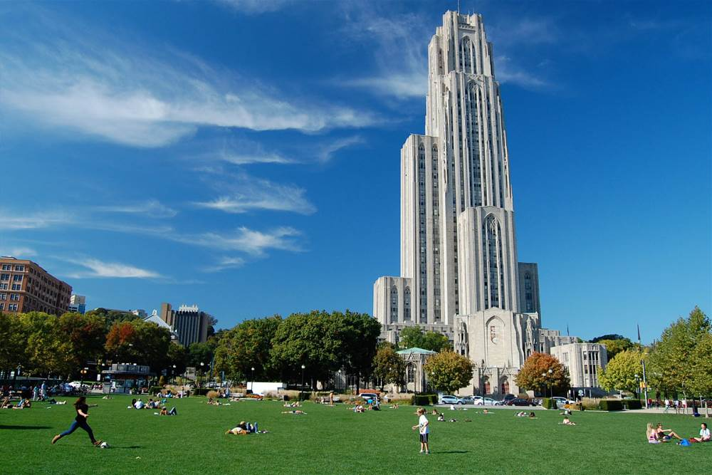

School
I am currently a senior. I have only 2 classes left to take after the summer, with a internship being one of them. I actually started college by going to Community College of Allegheny County but have completed the past 5 semesters at Pitt. I curretly have experience coding in Java, C, and Ruby but am curretly learning Python as well. I am not really sure what field of computer science I want to get into after school, but I am hoping to find something within Pittsburgh as I was born and raised here.